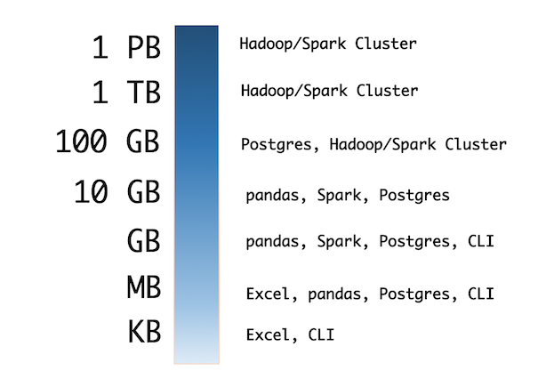
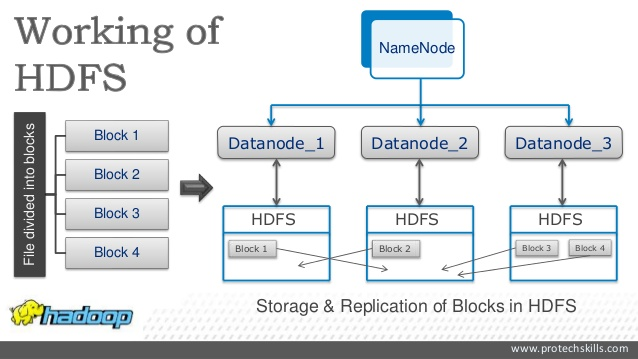
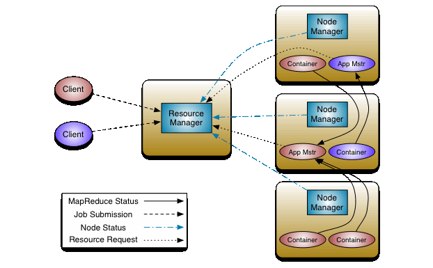

Hadoop¶
Data sets that are so large or complex that traditional data processing application software is inadequate to deal with them.
Data analysis requires massively parallel software running on several servers.
Volume, Variety, Velocity, Variability and Veracity describe Big Data properties.


Framework for running applications on large cluster.
The Hadoop framework transparently provides applications both reliability and data motion.
Hadoop implements the computational paradigm named Map/Reduce, where the application is divided into many small fragments of work, each of which may be executed or re-executed on any node in the cluster.
It provides a distributed file system (HDFS) that stores data on the compute nodes, providing very high aggregate bandwidth across the cluster.
Both MapReduce and the Hadoop Distributed File System are designed so that node failures are automatically handled by the framework.
HDFS¶
It is a distributed file systems.
HDFS is highly fault-tolerant and is designed to be deployed on low-cost hardware.
HDFS is suitable for applications that have large data sets.
HDFS provides interfaces to move applications closer to where the data is located. The computation is much more efficient when the size of the data set is huge.
HDFS consists of a single NameNode with a number of DataNodes which manage storage.
HDFS exposes a file system namespace and allows user data to be stored in files.
A file is split by the NameNode into blocks stored in DataNodes.
The NameNode executes operations like opening, closing, and renaming files and directories.
The Secondary NameNode stores information from NameNode.
The DataNodes manage perform block creation, deletion, and replication upon instruction from the NameNode.
The placement of replicas is optimized for data reliability, availability, and network bandwidth utilization.
User data never flows through the NameNode.
Files in HDFS are write-once and have strictly one writer at any time.
The DataNode has no knowledge about HDFS files.
Accessibility¶
All HDFS commands are invoked by the bin/hdfs Java script:
hdfs [SHELL_OPTIONS] COMMAND [GENERIC_OPTIONS] [COMMAND_OPTIONS]
Manage files and directories¶
hdfs dfs -ls -h -R # Recursively list subdirectories with human-readable file sizes.
hdfs dfs -cp # Copy files from source to destination
hdfs dfs -mv # Move files from source to destination
hdfs dfs -mkdir /foodir # Create a directory named /foodir
hdfs dfs -rmr /foodir # Remove a directory named /foodir
hdfs dfs -cat /foodir/myfile.txt #View the contents of a file named /foodir/myfile.txt
Transfer between nodes¶
put¶
hdfs fs -put [-f] [-p] [-l] [-d] [ - | <localsrc1> .. ]. <dst>
Copy single src, or multiple srcs from local file system to the destination file system.
Options:
-p : Preserves rights and modification times.
-f : Overwrites the destination if it already exists.
hdfs fs -put localfile /user/hadoop/hadoopfile
hdfs fs -put -f localfile1 localfile2 /user/hadoop/hadoopdir
Similar to the fs -put command
moveFromLocal: to delete the source localsrc after copy.copyFromLocal: source is restricted to a local filecopyToLocal: destination is restricted to a local file

The Name Node is not in the data path. The Name Node only provides the map of where data is and where data should go in the cluster (file system metadata).
Hadoop cluster¶
8 computers: sve1 -> sve9
NameNode Web Interface (HDFS layer)¶
http://svmass2.mass.uhb.fr:50070
The name node web UI shows you a cluster summary including information about total/remaining capacity, live and dead nodes. Additionally, it allows you to browse the HDFS namespace and view the contents of its files in the web browser. It also gives access to the local machine’s Hadoop log files.
Secondary Namenode Information.¶
http://svmass2.mass.uhb.fr:50090/
Datanode Information.¶
http://svpe1.mass.uhb.fr:50075/
http://svpe2.mass.uhb.fr:50075/
…
http://svpe8.mass.uhb.fr:50075/
http://svpe9.mass.uhb.fr:50075/
To do following hands on you can switch to JupyterLab.
Just go to this following address http://localhost:9000/lab
Check that your HDFS home directory required to execute MapReduce jobs exists:
hdfs dfs -ls /user/${USER}
Type the following commands:
hdfs dfs -ls
hdfs dfs -ls /
hdfs dfs -mkdir test
Create a local file user.txt containing your name and the date:
# %%bash
# echo "FirstName LastName" > user.txt
# echo `date` >> user.txt
# cat user.txt
Copy it on HDFS :
hdfs dfs -put user.txt
Check with:
hdfs dfs -ls -R
hdfs dfs -cat user.txt
hdfs dfs -tail user.txt
# %%bash
# hdfs dfs -put user.txt
# hdfs dfs -ls -R /user/navaro_p/
# %%bash
# hdfs dfs -cat user.txt
Remove the file:
hdfs dfs -rm user.txt
Put it again on HDFS and move to books directory:
hdfs dfs -copyFromLocal user.txt
hdfs dfs -mv user.txt books/user.txt
hdfs dfs -ls -R -h
Copy user.txt to hello.txt and remove it.
hdfs dfs -cp books/user.txt books/hello.txt
hdfs dfs -count -h /user/$USER
hdfs dfs -rm books/user.txt
Hands-on practice:¶
Create a directory
filesin HDFS.List the contents of a directory /.
Upload the file today.txt in HDFS.
date > today.txt
whoami >> today.txt
Display contents of file
today.txtCopy
today.txtfile from source tofilesdirectory.Copy file
jps.txtfrom/To Local file system to HDFS
jps > jps.txt
Move file
jps.txtfrom source tofiles.Remove file
today.txtfrom home directory in HDFS.Display last few lines of
jps.txt.Display the help of
ducommand and show the total amount of space in a human-readable fashion used by your home hdfs directory.Display the help of
dfcommand and show the total amount of space available in the filesystem in a human-readable fashion.With
chmodchange the rights oftoday.txtfile. I has to be readable and writeable only by you.
YARN¶
YARN takes care of resource management and job scheduling/monitoring.
The ResourceManager is the ultimate authority that arbitrates resources among all the applications in the system. It has two components: Scheduler and ApplicationsManager.
The NodeManager is the per-machine framework agent who is responsible for Containers, monitoring their resource usage (cpu, memory, disk, network) and reporting the same to the ResourceManager/Scheduler.
The per-application ApplicationMaster negotiates resources from the ResourceManager and working with the NodeManager(s) to execute and monitor the tasks.
The Scheduler is responsible for allocating resources to the applications.
The ApplicationsManager is responsible for accepting job-submissions, tracking their status and monitoring for progress.
 Source: http://hadoop.apache.org/docs/stable/hadoop-yarn/hadoop-yarn-site/yarn_architecture.gif
Yarn Web Interface¶
The JobTracker web UI provides information about general job statistics of the Hadoop cluster, running/completed/failed jobs and a job history log file. It also gives access to the ‘‘local machine’s’’ Hadoop log files (the machine on which the web UI is running on).
All Applications http://svmass2.mass.uhb.fr:8088
WordCount Example¶
The Worcount example is implemented in Java and it is the example of Hadoop MapReduce Tutorial
Let’s create some files with lorem python package
from lorem import text
for i in range(1,10):
with open('sample{0:02d}.txt'.format(i), 'w') as f:
f.write(text())
Make input directory in your HDFS home directory required to execute MapReduce jobs:
hdfs dfs -mkdir -p /user/${USER}/input
-p flag force the directory creation even if it already exists.
Exercise¶
Copy all necessary files in HDFS system.
Run the Java example using the command
hadoop jar /export/hadoop-2.7.6/share/hadoop/mapreduce/hadoop-mapreduce-examples-2.7.6.jar wordcount /user/you/input /user/you/output
Remove the output directory and try to use yarn
yarn jar /export/hadoop-2.7.6/share/hadoop/mapreduce/hadoop-mapreduce-examples-2.7.6.jar wordcount /user/you/input /user/you/output
Connect to the Yarn web user interface and read the logs carefully.
Deploying the MapReduce Python code on Hadoop¶
This Python must use the Hadoop Streaming API to pass data between our Map and Reduce code via Python’s sys.stdin (standard input) and sys.stdout (standard output).
Map¶
The following Python code read data from sys.stdin, split it into words and output a list of lines mapping words to their (intermediate) counts to sys.stdout. For every word it outputs
%%file mapper.py
from __future__ import print_function # for python2 compatibility
import sys, string
translator = str.maketrans('', '', string.punctuation)
# input comes from standard input
for line in sys.stdin:
line = line.strip().lower() # remove leading and trailing whitespace
line = line.translate(translator) # strip punctuation
for word in line.split(): # split the line into words
# write the results to standard output;
# what we output here will be the input for the
# Reduce step, i.e. the input for reducer.py
# tab-delimited; the trivial word count is 1
print (f'{word}\t 1')
Writing mapper.py
import sys
with open("mapper.py", "r+") as f:
s = f.read()
f.seek(0)
f.write("#!"+sys.executable+"\n" + s)
The python script must be executable:
chmod +x mapper.py
Try to run in a terminal with:
cat sample01.txt | ./mapper.py | sort
or
./mapper.py < sample01.txt | sort
# %%bash
# chmod +x mapper.py
# cat sample01.txt | ./mapper.py | sort
Reduce¶
The following code reads the results of mapper.py and sum the occurrences of each word to a final count, and then output its results to sys.stdout. Remember that Hadoop sorts map output so it is easier to count words.
%%file reducer.py
from __future__ import print_function
from operator import itemgetter
import sys
current_word = None
current_count = 0
word = None
for line in sys.stdin:
# parse the input we got from mapper.py
word, count = line.split('\t', 1)
# convert count (currently a string) to int
try:
count = int(count)
except ValueError:
# count was not a number, so silently
# ignore/discard this line
continue
# this IF-switch only works because Hadoop sorts map output
# by key (here: word) before it is passed to the reducer
if current_word == word:
current_count += count
else:
if current_word:
# write result to sys.stdout
print (f'{current_count}\t{current_word}')
current_count = count
current_word = word
# do not forget to output the last word if needed!
if current_word == word:
print (f'{current_count}\t{current_word}')
Writing reducer.py
import sys
with open("reducer.py", "r+") as f:
s = f.read()
f.seek(0)
f.write("#!"+sys.executable+"\n" + s)
As mapper the python script must be executable:
chmod +x reducer.py
Try to run in a terminal with:
cat sample.txt | ./mapper.py | sort | ./reducer.py | sort
or
./mapper.py < sample01.txt | sort | ./reducer.py | sort
# %%bash
# chmod +x reducer.py
# ./mapper.py < sample01.txt | sort | ./reducer.py | sort
Execution on Hadoop cluster¶
Copy all files to HDFS cluster
Run the WordCount MapReduce
%%file Makefile
HADOOP_VERSION=2.7.6
HADOOP_HOME=/export/hadoop-${HADOOP_VERSION}
HADOOP_TOOLS=${HADOOP_HOME}/share/hadoop/tools/lib
HDFS_DIR=/user/${USER}
SAMPLES = sample01.txt sample02.txt sample03.txt sample04.txt
copy_to_hdfs: ${SAMPLES}
hdfs dfs -mkdir -p ${HDFS_DIR}/input
hdfs dfs -put $^ ${HDFS_DIR}/input
run_with_hadoop:
hadoop jar ${HADOOP_TOOLS}/hadoop-streaming-${HADOOP_VERSION}.jar \
-file ${PWD}/mapper.py -mapper ${PWD}/mapper.py \
-file ${PWD}/reducer.py -reducer ${PWD}/reducer.py \
-input ${HDFS_DIR}/input/*.txt -output ${HDFS_DIR}/output-hadoop
run_with_yarn:
yarn jar ${HADOOP_TOOLS}/hadoop-streaming-${HADOOP_VERSION}.jar \
-file ${PWD}/mapper.py -mapper ${PWD}/mapper.py \
-file ${PWD}/reducer.py -reducer ${PWD}/reducer.py \
-input ${HDFS_DIR}/input/*.txt -output ${HDFS_DIR}/output-yarn
Writing Makefile
# %%bash
# hdfs dfs -rm -r input
# make copy_to_hdfs
# hdfs dfs -ls input
# %%bash
# hdfs dfs -rm -r -f output-hadoop
# make run_with_hadoop
# hdfs dfs -cat output-hadoop/*